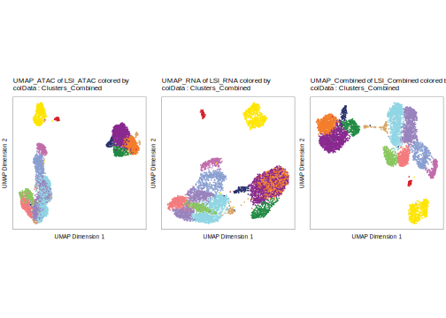

21.2 Analysis of multiome data in ArchR
With our multiome project created, we’re now ready to start analysis. It is worth mentioning that the analyses below aren’t altogether different from the analyses presented in the rest of this manual. Because of the inclusion of gene scores, ArchR was already performing analyses that leveraged gene-level information and scATAC-seq information. The primary difference between ATAC-only analysis and multiomic analysis is that we are using the GeneExpressionMatrix instead of the GeneScoreMatrix.
The first thing we will do is perform dimensionality reduction using addIterativeLSI(). We can do this on the scATAC-seq data via the TileMatrix and on the scRNA-seq data via the GeneExpressionMatrix.
projMulti2 <- addIterativeLSI(
ArchRProj = projMulti2,
clusterParams = list(
resolution = 0.2,
sampleCells = 10000,
n.start = 10
),
saveIterations = FALSE,
useMatrix = "TileMatrix",
depthCol = "nFrags",
name = "LSI_ATAC"
)
## Checking Inputs...
## ArchR logging to : ArchRLogs/ArchR-addIterativeLSI-371b016b3a3dd-Date-2022-12-23_Time-09-48-41.log
## If there is an issue, please report to github with logFile!
## 2022-12-23 09:48:43 : Computing Total Across All Features, 0.022 mins elapsed.
## 2022-12-23 09:48:44 : Computing Top Features, 0.039 mins elapsed.
## ###########
## 2022-12-23 09:48:47 : Running LSI (1 of 2) on Top Features, 0.079 mins elapsed.
## ###########
## 2022-12-23 09:48:47 : Creating Partial Matrix, 0.079 mins elapsed.
## 2022-12-23 09:48:59 : Computing LSI, 0.279 mins elapsed.
## 2022-12-23 09:49:37 : Identifying Clusters, 0.907 mins elapsed.
## Warning: The following arguments are not used: row.names
## 2022-12-23 09:49:44 : Identified 5 Clusters, 1.029 mins elapsed.
## 2022-12-23 09:49:44 : Creating Cluster Matrix on the total Group Features, 1.029 mins elapsed.
## 2022-12-23 09:50:06 : Computing Variable Features, 1.391 mins elapsed.
## ###########
## 2022-12-23 09:50:06 : Running LSI (2 of 2) on Variable Features, 1.393 mins elapsed.
## ###########
## 2022-12-23 09:50:06 : Creating Partial Matrix, 1.393 mins elapsed.
## 2022-12-23 09:50:17 : Computing LSI, 1.578 mins elapsed.
## 2022-12-23 09:50:41 : Finished Running IterativeLSI, 1.983 mins elapsed.projMulti2 <- addIterativeLSI(
ArchRProj = projMulti2,
clusterParams = list(
resolution = 0.2,
sampleCells = 10000,
n.start = 10
),
saveIterations = FALSE,
useMatrix = "GeneExpressionMatrix",
depthCol = "Gex_nUMI",
varFeatures = 2500,
firstSelection = "variable",
binarize = FALSE,
name = "LSI_RNA"
)
## Checking Inputs...
## ArchR logging to : ArchRLogs/ArchR-addIterativeLSI-371b0711d1aee-Date-2022-12-23_Time-09-50-41.log
## If there is an issue, please report to github with logFile!
## 2022-12-23 09:50:44 : Computing Variability Across All Features, 0.022 mins elapsed.
## 2022-12-23 09:50:45 : Computing Variable Features, 0.037 mins elapsed.
## ###########
## 2022-12-23 09:50:47 : Running LSI (1 of 2) on Top Features, 0.069 mins elapsed.
## ###########
## 2022-12-23 09:50:47 : Creating Partial Matrix, 0.069 mins elapsed.
## 2022-12-23 09:50:52 : Computing LSI, 0.156 mins elapsed.
## 2022-12-23 09:51:05 : Identifying Clusters, 0.367 mins elapsed.
## Warning: The following arguments are not used: row.names
## 2022-12-23 09:51:11 : Identified 8 Clusters, 0.479 mins elapsed.
## 2022-12-23 09:51:11 : Creating Cluster Matrix on the total Group Features, 0.479 mins elapsed.
## 2022-12-23 09:51:31 : Computing Variable Features, 0.809 mins elapsed.
## ###########
## 2022-12-23 09:51:31 : Running LSI (2 of 2) on Variable Features, 0.809 mins elapsed.
## ###########
## 2022-12-23 09:51:31 : Creating Partial Matrix, 0.809 mins elapsed.
## 2022-12-23 09:51:36 : Computing LSI, 0.893 mins elapsed.
## 2022-12-23 09:51:46 : Finished Running IterativeLSI, 1.066 mins elapsed.We can also create a dimensionality reduction that uses information from both the scATAC-seq and scRNA-seq data. We will name this reducedDims object “LSI_Combined”.
projMulti2 <- addCombinedDims(projMulti2, reducedDims = c("LSI_ATAC", "LSI_RNA"), name = "LSI_Combined")We can create UMAP embeddings for each of these dimensionality reductions.
projMulti2 <- addUMAP(projMulti2, reducedDims = "LSI_ATAC", name = "UMAP_ATAC", minDist = 0.8, force = TRUE)
## 09:51:47 UMAP embedding parameters a = 0.2321 b = 1.681
## 09:51:47 Read 5323 rows and found 30 numeric columns
## 09:51:47 Using Annoy for neighbor search, n_neighbors = 40
## 09:51:47 Building Annoy index with metric = cosine, n_trees = 50
## 0% 10 20 30 40 50 60 70 80 90 100%
## [----|----|----|----|----|----|----|----|----|----|
## **************************************************|
## 09:51:47 Writing NN index file to temp file /tmp/Rtmp5J9pWv/file371b02d82c885
## 09:51:47 Searching Annoy index using 64 threads, search_k = 4000
## 09:51:47 Annoy recall = 100%
## 09:51:49 Commencing smooth kNN distance calibration using 64 threads
## 09:51:51 Initializing from normalized Laplacian + noise
## 09:51:51 Commencing optimization for 500 epochs, with 303770 positive edges
## 09:51:59 Optimization finished
## 09:51:59 Creating temp model dir /tmp/Rtmp5J9pWv/dir371b042bd833c
## 09:51:59 Creating dir /tmp/Rtmp5J9pWv/dir371b042bd833c
## 09:52:00 Changing to /tmp/Rtmp5J9pWv/dir371b042bd833c
## 09:52:00 Creating /corces/home/rcorces/scripts/github/ArchR_Website_Testing/bookdown/Save-ProjMulti2/Embeddings/Save-Uwot-UMAP-Params-LSI_ATAC-371b07518ee96-Date-2022-12-23_Time-09-51-59.tar
projMulti2 <- addUMAP(projMulti2, reducedDims = "LSI_RNA", name = "UMAP_RNA", minDist = 0.8, force = TRUE)
## 09:52:00 UMAP embedding parameters a = 0.2321 b = 1.681
## 09:52:00 Read 5323 rows and found 30 numeric columns
## 09:52:00 Using Annoy for neighbor search, n_neighbors = 40
## 09:52:00 Building Annoy index with metric = cosine, n_trees = 50
## 0% 10 20 30 40 50 60 70 80 90 100%
## [----|----|----|----|----|----|----|----|----|----|
## **************************************************|
## 09:52:01 Writing NN index file to temp file /tmp/Rtmp5J9pWv/file371b02b083ee5
## 09:52:01 Searching Annoy index using 64 threads, search_k = 4000
## 09:52:01 Annoy recall = 100%
## 09:52:03 Commencing smooth kNN distance calibration using 64 threads
## 09:52:04 Initializing from normalized Laplacian + noise
## 09:52:05 Commencing optimization for 500 epochs, with 294502 positive edges
## 09:52:12 Optimization finished
## 09:52:12 Creating temp model dir /tmp/Rtmp5J9pWv/dir371b076558c32
## 09:52:12 Creating dir /tmp/Rtmp5J9pWv/dir371b076558c32
## 09:52:14 Changing to /tmp/Rtmp5J9pWv/dir371b076558c32
## 09:52:14 Creating /corces/home/rcorces/scripts/github/ArchR_Website_Testing/bookdown/Save-ProjMulti2/Embeddings/Save-Uwot-UMAP-Params-LSI_RNA-371b06fc93dd1-Date-2022-12-23_Time-09-52-12.tar
projMulti2 <- addUMAP(projMulti2, reducedDims = "LSI_Combined", name = "UMAP_Combined", minDist = 0.8, force = TRUE)
## 09:52:14 UMAP embedding parameters a = 0.2321 b = 1.681
## 09:52:14 Read 5323 rows and found 60 numeric columns
## 09:52:14 Using Annoy for neighbor search, n_neighbors = 40
## 09:52:14 Building Annoy index with metric = cosine, n_trees = 50
## 0% 10 20 30 40 50 60 70 80 90 100%
## [----|----|----|----|----|----|----|----|----|----|
## **************************************************|
## 09:52:15 Writing NN index file to temp file /tmp/Rtmp5J9pWv/file371b04d133045
## 09:52:15 Searching Annoy index using 64 threads, search_k = 4000
## 09:52:15 Annoy recall = 100%
## 09:52:16 Commencing smooth kNN distance calibration using 64 threads
## 09:52:18 Initializing from normalized Laplacian + noise
## 09:52:18 Commencing optimization for 500 epochs, with 301584 positive edges
## 09:52:26 Optimization finished
## 09:52:26 Creating temp model dir /tmp/Rtmp5J9pWv/dir371b0bbfa8b3
## 09:52:26 Creating dir /tmp/Rtmp5J9pWv/dir371b0bbfa8b3
## 09:52:28 Changing to /tmp/Rtmp5J9pWv/dir371b0bbfa8b3
## 09:52:28 Creating /corces/home/rcorces/scripts/github/ArchR_Website_Testing/bookdown/Save-ProjMulti2/Embeddings/Save-Uwot-UMAP-Params-LSI_Combined-371b0296d5304-Date-2022-12-23_Time-09-52-26.tarAnd then call clusters for each.
projMulti2 <- addClusters(projMulti2, reducedDims = "LSI_ATAC", name = "Clusters_ATAC", resolution = 0.4, force = TRUE)
## ArchR logging to : ArchRLogs/ArchR-addClusters-371b068b5564e-Date-2022-12-23_Time-09-52-28.log
## If there is an issue, please report to github with logFile!
## 2022-12-23 09:52:29 : Running Seurats FindClusters (Stuart et al. Cell 2019), 0.001 mins elapsed.
## Warning: The following arguments are not used: row.names
## Computing nearest neighbor graph
## Computing SNN
## Modularity Optimizer version 1.3.0 by Ludo Waltman and Nees Jan van Eck
##
## Number of nodes: 5323
## Number of edges: 230133
##
## Running Louvain algorithm...
## Maximum modularity in 10 random starts: 0.9129
## Number of communities: 11
## Elapsed time: 0 seconds
## 2022-12-23 09:52:36 : Testing Biased Clusters, 0.109 mins elapsed.
## 2022-12-23 09:52:36 : Testing Outlier Clusters, 0.109 mins elapsed.
## 2022-12-23 09:52:36 : Assigning Cluster Names to 11 Clusters, 0.109 mins elapsed.
## 2022-12-23 09:52:36 : Finished addClusters, 0.11 mins elapsed.
projMulti2 <- addClusters(projMulti2, reducedDims = "LSI_RNA", name = "Clusters_RNA", resolution = 0.4, force = TRUE)
## ArchR logging to : ArchRLogs/ArchR-addClusters-371b05622e7b4-Date-2022-12-23_Time-09-52-36.log
## If there is an issue, please report to github with logFile!
## 2022-12-23 09:52:37 : Running Seurats FindClusters (Stuart et al. Cell 2019), 0.001 mins elapsed.
## Warning: The following arguments are not used: row.names
## Computing nearest neighbor graph
## Computing SNN
## Modularity Optimizer version 1.3.0 by Ludo Waltman and Nees Jan van Eck
##
## Number of nodes: 5323
## Number of edges: 210178
##
## Running Louvain algorithm...
## Maximum modularity in 10 random starts: 0.9160
## Number of communities: 12
## Elapsed time: 0 seconds
## 2022-12-23 09:52:43 : Testing Biased Clusters, 0.105 mins elapsed.
## 2022-12-23 09:52:43 : Testing Outlier Clusters, 0.105 mins elapsed.
## 2022-12-23 09:52:43 : Assigning Cluster Names to 12 Clusters, 0.105 mins elapsed.
## 2022-12-23 09:52:44 : Finished addClusters, 0.106 mins elapsed.
projMulti2 <- addClusters(projMulti2, reducedDims = "LSI_Combined", name = "Clusters_Combined", resolution = 0.4, force = TRUE)
## ArchR logging to : ArchRLogs/ArchR-addClusters-371b06f19f297-Date-2022-12-23_Time-09-52-44.log
## If there is an issue, please report to github with logFile!
## 2022-12-23 09:52:45 : Running Seurats FindClusters (Stuart et al. Cell 2019), 0.001 mins elapsed.
## Warning: The following arguments are not used: row.names
## Computing nearest neighbor graph
## Computing SNN
## Modularity Optimizer version 1.3.0 by Ludo Waltman and Nees Jan van Eck
##
## Number of nodes: 5323
## Number of edges: 229883
##
## Running Louvain algorithm...
## Maximum modularity in 10 random starts: 0.9242
## Number of communities: 12
## Elapsed time: 0 seconds
## 2022-12-23 09:52:53 : Testing Outlier Clusters, 0.142 mins elapsed.
## 2022-12-23 09:52:53 : Assigning Cluster Names to 12 Clusters, 0.142 mins elapsed.
## 2022-12-23 09:52:53 : Finished addClusters, 0.143 mins elapsed.We can plot how each of these dimensionality reductions look with respect to the clusters called in “LSI_Combined”.
p1 <- plotEmbedding(projMulti2, name = "Clusters_Combined", embedding = "UMAP_ATAC", size = 1, labelAsFactors=F, labelMeans=F)
## ArchR logging to : ArchRLogs/ArchR-plotEmbedding-371b026eae8ba-Date-2022-12-23_Time-09-52-54.log
## If there is an issue, please report to github with logFile!
## Getting UMAP Embedding
## ColorBy = cellColData
## Plotting Embedding
## 1
## ArchR logging successful to : ArchRLogs/ArchR-plotEmbedding-371b026eae8ba-Date-2022-12-23_Time-09-52-54.log
p2 <- plotEmbedding(projMulti2, name = "Clusters_Combined", embedding = "UMAP_RNA", size = 1, labelAsFactors=F, labelMeans=F)
## ArchR logging to : ArchRLogs/ArchR-plotEmbedding-371b07c3aed0d-Date-2022-12-23_Time-09-52-56.log
## If there is an issue, please report to github with logFile!
## Getting UMAP Embedding
## ColorBy = cellColData
## Plotting Embedding
## 1
## ArchR logging successful to : ArchRLogs/ArchR-plotEmbedding-371b07c3aed0d-Date-2022-12-23_Time-09-52-56.log
p3 <- plotEmbedding(projMulti2, name = "Clusters_Combined", embedding = "UMAP_Combined", size = 1, labelAsFactors=F, labelMeans=F)
## ArchR logging to : ArchRLogs/ArchR-plotEmbedding-371b082872b9-Date-2022-12-23_Time-09-52-59.log
## If there is an issue, please report to github with logFile!
## Getting UMAP Embedding
## ColorBy = cellColData
## Plotting Embedding
## 1
## ArchR logging successful to : ArchRLogs/ArchR-plotEmbedding-371b082872b9-Date-2022-12-23_Time-09-52-59.log
p <- lapply(list(p1,p2,p3), function(x){
x + guides(color = "none", fill = "none") +
theme_ArchR(baseSize = 6.5) +
theme(plot.margin = unit(c(0.1, 0.1, 0.1, 0.1), "cm")) +
theme(
axis.text.x=element_blank(),
axis.ticks.x=element_blank(),
axis.text.y=element_blank(),
axis.ticks.y=element_blank()
)
})
do.call(cowplot::plot_grid, c(list(ncol = 3),p))
We can also save this to a PDF file.
plotPDF(p1, p2, p3, name = "UMAP-scATAC-scRNA-Combined", addDOC = FALSE)
## Plotting Ggplot!
## Plotting Ggplot!
## Plotting Ggplot!You’ll notice that there are some differences between the cluster residence of cells in the scATAC-seq space and cells in the scRNA-seq space. We can visualize these differences using a confusion matrix.
cM_atac_rna <- confusionMatrix(paste0(projMulti2$Clusters_ATAC), paste0(projMulti2$Clusters_RNA))
cM_atac_rna <- cM_atac_rna / Matrix::rowSums(cM_atac_rna)
library(pheatmap)
p_atac_rna <- pheatmap::pheatmap(
mat = as.matrix(cM_atac_rna),
color = paletteContinuous("whiteBlue"),
border_color = "black"
)Nearly all of the operations that you will want to do downstream are equivalent to what is shown throughout the manual for the scATAC-seq-only analyses so we wont go into them here. As an example, to get peak-to-gene links from multiome data, we could use the following code.
projMulti2 <- addGroupCoverages(ArchRProj = projMulti2, groupBy = "Clusters_Combined", verbose = FALSE)
## ArchR logging to : ArchRLogs/ArchR-addGroupCoverages-371b042a9fe8b-Date-2022-12-23_Time-09-53-11.log
## If there is an issue, please report to github with logFile!
## C1 (1 of 12) : CellGroups N = 2
## C2 (2 of 12) : CellGroups N = 2
## C3 (3 of 12) : CellGroups N = 2
## C4 (4 of 12) : CellGroups N = 2
## C5 (5 of 12) : CellGroups N = 2
## C6 (6 of 12) : CellGroups N = 2
## C7 (7 of 12) : CellGroups N = 2
## C8 (8 of 12) : CellGroups N = 2
## C9 (9 of 12) : CellGroups N = 2
## C10 (10 of 12) : CellGroups N = 2
## C11 (11 of 12) : CellGroups N = 2
## C12 (12 of 12) : CellGroups N = 2
## 2022-12-23 09:53:32 : Creating Coverage Files!, 0.348 mins elapsed.
## 2022-12-23 09:53:32 : Batch Execution w/ safelapply!, 0.348 mins elapsed.
## Number of Cells = 40
## Coverage File Exists!
## Added Coverage Group
## Added Metadata Group
## Added ArrowCoverage Class
## Added Coverage/Info
## Added Coverage/Info/CellNames
## Number of Cells = 40
## Coverage File Exists!
## Added Coverage Group
## Added Metadata Group
## Added ArrowCoverage Class
## Added Coverage/Info
## Added Coverage/Info/CellNames
## Number of Cells = 76
## Coverage File Exists!
## Added Coverage Group
## Added Metadata Group
## Added ArrowCoverage Class
## Added Coverage/Info
## Added Coverage/Info/CellNames
## Number of Cells = 47
## Coverage File Exists!
## Added Coverage Group
## Added Metadata Group
## Added ArrowCoverage Class
## Added Coverage/Info
## Added Coverage/Info/CellNames
## Number of Cells = 500
## Coverage File Exists!
## Added Coverage Group
## Added Metadata Group
## Added ArrowCoverage Class
## Added Coverage/Info
## Added Coverage/Info/CellNames
## Number of Cells = 500
## Coverage File Exists!
## Added Coverage Group
## Added Metadata Group
## Added ArrowCoverage Class
## Added Coverage/Info
## Added Coverage/Info/CellNames
## Number of Cells = 121
## Coverage File Exists!
## Added Coverage Group
## Added Metadata Group
## Added ArrowCoverage Class
## Added Coverage/Info
## Added Coverage/Info/CellNames
## Number of Cells = 112
## Coverage File Exists!
## Added Coverage Group
## Added Metadata Group
## Added ArrowCoverage Class
## Added Coverage/Info
## Added Coverage/Info/CellNames
## Number of Cells = 285
## Coverage File Exists!
## Added Coverage Group
## Added Metadata Group
## Added ArrowCoverage Class
## Added Coverage/Info
## Added Coverage/Info/CellNames
## Number of Cells = 185
## Coverage File Exists!
## Added Coverage Group
## Added Metadata Group
## Added ArrowCoverage Class
## Added Coverage/Info
## Added Coverage/Info/CellNames
## Number of Cells = 234
## Coverage File Exists!
## Added Coverage Group
## Added Metadata Group
## Added ArrowCoverage Class
## Added Coverage/Info
## Added Coverage/Info/CellNames
## Number of Cells = 194
## Coverage File Exists!
## Added Coverage Group
## Added Metadata Group
## Added ArrowCoverage Class
## Added Coverage/Info
## Added Coverage/Info/CellNames
## Number of Cells = 100
## Coverage File Exists!
## Added Coverage Group
## Added Metadata Group
## Added ArrowCoverage Class
## Added Coverage/Info
## Added Coverage/Info/CellNames
## Number of Cells = 93
## Coverage File Exists!
## Added Coverage Group
## Added Metadata Group
## Added ArrowCoverage Class
## Added Coverage/Info
## Added Coverage/Info/CellNames
## Number of Cells = 500
## Coverage File Exists!
## Added Coverage Group
## Added Metadata Group
## Added ArrowCoverage Class
## Added Coverage/Info
## Added Coverage/Info/CellNames
## Number of Cells = 76
## Coverage File Exists!
## Added Coverage Group
## Added Metadata Group
## Added ArrowCoverage Class
## Added Coverage/Info
## Added Coverage/Info/CellNames
## Number of Cells = 286
## Coverage File Exists!
## Added Coverage Group
## Added Metadata Group
## Added ArrowCoverage Class
## Added Coverage/Info
## Added Coverage/Info/CellNames
## Number of Cells = 40
## Coverage File Exists!
## Added Coverage Group
## Added Metadata Group
## Added ArrowCoverage Class
## Added Coverage/Info
## Added Coverage/Info/CellNames
## Number of Cells = 370
## Coverage File Exists!
## Added Coverage Group
## Added Metadata Group
## Added ArrowCoverage Class
## Added Coverage/Info
## Added Coverage/Info/CellNames
## Number of Cells = 40
## Coverage File Exists!
## Added Coverage Group
## Added Metadata Group
## Added ArrowCoverage Class
## Added Coverage/Info
## Added Coverage/Info/CellNames
## Number of Cells = 334
## Coverage File Exists!
## Added Coverage Group
## Added Metadata Group
## Added ArrowCoverage Class
## Added Coverage/Info
## Added Coverage/Info/CellNames
## Number of Cells = 40
## Coverage File Exists!
## Added Coverage Group
## Added Metadata Group
## Added ArrowCoverage Class
## Added Coverage/Info
## Added Coverage/Info/CellNames
## Number of Cells = 302
## Coverage File Exists!
## Added Coverage Group
## Added Metadata Group
## Added ArrowCoverage Class
## Added Coverage/Info
## Added Coverage/Info/CellNames
## Number of Cells = 40
## Coverage File Exists!
## Added Coverage Group
## Added Metadata Group
## Added ArrowCoverage Class
## Added Coverage/Info
## Added Coverage/Info/CellNames
## 2022-12-23 10:11:46 : Adding Kmer Bias to Coverage Files!, 18.586 mins elapsed.
## Completed Kmer Bias Calculation
## Adding Kmer Bias (1 of 24)
## Adding Kmer Bias (2 of 24)
## Adding Kmer Bias (3 of 24)
## Adding Kmer Bias (4 of 24)
## Adding Kmer Bias (5 of 24)
## Adding Kmer Bias (6 of 24)
## Adding Kmer Bias (7 of 24)
## Adding Kmer Bias (8 of 24)
## Adding Kmer Bias (9 of 24)
## Adding Kmer Bias (10 of 24)
## Adding Kmer Bias (11 of 24)
## Adding Kmer Bias (12 of 24)
## Adding Kmer Bias (13 of 24)
## Adding Kmer Bias (14 of 24)
## Adding Kmer Bias (15 of 24)
## Adding Kmer Bias (16 of 24)
## Adding Kmer Bias (17 of 24)
## Adding Kmer Bias (18 of 24)
## Adding Kmer Bias (19 of 24)
## Adding Kmer Bias (20 of 24)
## Adding Kmer Bias (21 of 24)
## Adding Kmer Bias (22 of 24)
## Adding Kmer Bias (23 of 24)
## Adding Kmer Bias (24 of 24)
## 2022-12-23 10:13:19 : Finished Creation of Coverage Files!, 20.141 mins elapsed.
## ArchR logging successful to : ArchRLogs/ArchR-addGroupCoverages-371b042a9fe8b-Date-2022-12-23_Time-09-53-11.log
projMulti2 <- addReproduciblePeakSet(ArchRProj = projMulti2, groupBy = "Clusters_Combined", pathToMacs2 = "/corces/home/rcorces/tools/python/p3.8.5/bin/macs2")
## ArchR logging to : ArchRLogs/ArchR-addReproduciblePeakSet-371b05b5e6e3c-Date-2022-12-23_Time-10-13-22.log
## If there is an issue, please report to github with logFile!
## Calling Peaks with Macs2
## 2022-12-23 10:13:25 : Peak Calling Parameters!, 0.045 mins elapsed.
## Group nCells nCellsUsed nReplicates nMin nMax maxPeaks
## C1 C1 54 53 2 40 40 26500
## C2 C2 123 123 2 47 76 61500
## C3 C3 1536 1000 2 500 500 150000
## C4 C4 233 233 2 112 121 116500
## C5 C5 470 470 2 185 285 150000
## C6 C6 428 428 2 194 234 150000
## C7 C7 193 193 2 93 100 96500
## C8 C8 834 576 2 76 500 150000
## C9 C9 326 326 2 40 286 150000
## C10 C10 410 410 2 40 370 150000
## C11 C11 374 374 2 40 334 150000
## C12 C12 342 342 2 40 302 150000
## 2022-12-23 10:13:25 : Batching Peak Calls!, 0.045 mins elapsed.
## 2022-12-23 10:13:25 : Batch Execution w/ safelapply!, 0 mins elapsed.
## 2022-12-23 10:15:10 : Identifying Reproducible Peaks!, 1.797 mins elapsed.
## 2022-12-23 10:15:22 : Creating Union Peak Set!, 2 mins elapsed.
## Converged after 7 iterations!
## Plotting Ggplot!
## 2022-12-23 10:15:29 : Finished Creating Union Peak Set (159055)!, 2.109 mins elapsed.
projMulti2 <- addPeakMatrix(ArchRProj = projMulti2)
## ArchR logging to : ArchRLogs/ArchR-addPeakMatrix-371b012570adc-Date-2022-12-23_Time-10-15-29.log
## If there is an issue, please report to github with logFile!
## 2022-12-23 10:15:30 : Batch Execution w/ safelapply!, 0 mins elapsed.
## ArchR logging successful to : ArchRLogs/ArchR-addPeakMatrix-371b012570adc-Date-2022-12-23_Time-10-15-29.log
projMulti2 <- addPeak2GeneLinks(ArchRProj = projMulti2, reducedDims = "LSI_Combined", useMatrix = "GeneExpressionMatrix")
## ArchR logging to : ArchRLogs/ArchR-addPeak2GeneLinks-371b04c7b892a-Date-2022-12-23_Time-10-17-20.log
## If there is an issue, please report to github with logFile!
## 2022-12-23 10:17:21 : Getting Available Matrices, 0.023 mins elapsed.
## 2022-12-23 10:17:24 : Filtered Low Prediction Score Cells (0 of 5471, 0), 0.021 mins elapsed.
## 2022-12-23 10:17:24 : Computing KNN, 0.027 mins elapsed.
## 2022-12-23 10:17:24 : Identifying Non-Overlapping KNN pairs, 0.028 mins elapsed.
## 2022-12-23 10:17:26 : Identified 484 Groupings!, 0.054 mins elapsed.
## 2022-12-23 10:17:26 : Getting Group RNA Matrix, 0.054 mins elapsed.
## 2022-12-23 10:17:47 : Getting Group ATAC Matrix, 0.413 mins elapsed.
## 2022-12-23 10:18:12 : Normalizing Group Matrices, 0.823 mins elapsed.
## 2022-12-23 10:18:16 : Finding Peak Gene Pairings, 0.9 mins elapsed.
## 2022-12-23 10:18:17 : Computing Correlations, 0.91 mins elapsed.
## 2022-12-23 10:18:24 : Completed Peak2Gene Correlations!, 1.028 mins elapsed.
## ArchR logging successful to : ArchRLogs/ArchR-addPeak2GeneLinks-371b04c7b892a-Date-2022-12-23_Time-10-17-20.log
p2g <- getPeak2GeneLinks(ArchRProj = projMulti2)
p2g[[1]]
## GRanges object with 103777 ranges and 2 metadata columns:
## seqnames ranges strand | value FDR
## <Rle> <IRanges> <Rle> | <numeric> <numeric>
## [1] chr1 817339-998050 * | 0.564826 6.98634e-41
## [2] chr1 817339-999980 * | 0.558695 7.68749e-40
## [3] chr1 817339-1001137 * | 0.609546 3.44229e-49
## [4] chr1 827597-844654 * | 0.451604 1.01690e-24
## [5] chr1 906926-966481 * | 0.545307 1.22247e-37
## ... ... ... ... . ... ...
## [103773] chrX 154801028-154805396 * | 0.774142 8.67329e-96
## [103774] chrX 154805396-155027875 * | 0.491940 8.62482e-30
## [103775] chrX 154886348-155026868 * | 0.477557 6.64926e-28
## [103776] chrX 155611481-155612876 * | 0.550036 2.09262e-38
## [103777] chrX 155612876-155841550 * | 0.528625 4.93144e-35
## -------
## seqinfo: 23 sequences from an unspecified genome; no seqlengthsThere are, of course, some aspects of the analysis which you should tweak when using multiome data. One such example is the bias argument to getMarkerFeatures() which can be tweaked to account for both scATAC-seq data quality ("TSSEnrichment) and read depth for both assays ("log10(nFrags)" for scATAC-seq and "log10(Gex_nUMI)" for scRNA-seq).
se <- getMarkerFeatures(ArchRProj = projMulti2,
groupBy = "Clusters_Combined",
bias = c("TSSEnrichment", "log10(nFrags)", "log10(Gex_nUMI)"))
## ArchR logging to : ArchRLogs/ArchR-getMarkerFeatures-371b08f5621b-Date-2022-12-23_Time-10-18-24.log
## If there is an issue, please report to github with logFile!
## MatrixClass = Sparse.Double.Matrix
## 2022-12-23 10:18:26 : Matching Known Biases, 0.004 mins elapsed.
## ###########
## 2022-12-23 10:19:40 : Completed Pairwise Tests, 1.23 mins elapsed.
## ###########
## ArchR logging successful to : ArchRLogs/ArchR-getMarkerFeatures-371b08f5621b-Date-2022-12-23_Time-10-18-24.log
heatmap_gex <- plotMarkerHeatmap(
seMarker = se,
cutOff = "FDR <= 0.01 & Log2FC >= 2",
nLabel = 4,
transpose = TRUE
)
## ArchR logging to : ArchRLogs/ArchR-plotMarkerHeatmap-371b079fe51b0-Date-2022-12-23_Time-10-19-40.log
## If there is an issue, please report to github with logFile!
## Printing Top Marker Genes:
## C1:
## MIR6729, LRRC38, TSPAN1, TTC39A, TTC39A-AS1, LOC100129046, LINC01356, NGF, SFT2D2, PKP1, LAD1, VASH2, SLC35F3, PARD3, LOC101929445
## C2:
## TGFB2-AS1, VSTM4, CSNK2A3, LOC387810, PRMT8, ADCY6, CFAP73, C2orf91, LINC01854, TFPI, LINC01427, LINC02011, RBMS3, DCLK3, CACNA2D3-AS1
## C3:
## PDPN, TMEM51, C1orf195, CTRC, CELA2A, PADI2, PADI3, MIR3972, PADI4, PADI6, ARHGEF10L, CDA, EPHB2, MIR4684, TENT5B
## C4:
## IGSF21, ELAVL4, SPATA42, ATP1A4, BECN2, LIPK, TCF7L2, HABP2, TMTC1, MIR6074, DLK1, LINC02182, OR1G1, OR1A2, OR1A1
## C5:
## LINC01346, PLA2G5, PLA2G2D, LINC01141, ALPL, GRIK3, MIR4255, LINC01343, BEND5, ROR1, CYR61, NTNG1, KCND3, KCND3-IT1, KCND3-AS1
## C6:
## PODN, GLIS1, BRDT, SOX13, DLG5-AS1, SLIT1-AS1, FGFR2, CADM1, LOC105369509, B3GAT1, LOC283177, PZP, STYK1, KRT75, KRT6B
## C7:
## KAZN, LEXM, C8A, C8B, IL23R, IL12RB2, ABCA4, PDZK1, SH2D1B, LOC100505795, C1orf21, LINC01221, LINC01655, GREM2, AKR1C1
## C8:
## MIR4735, TCERG1L-AS1, SNHG18, SNORD123, NAP1L3, LINC01346, MIR6729, LRRC38, PDPN, KAZN, TMEM51-AS1, TMEM51, C1orf195, CTRC, CELA2A
## C9:
## NELL2, KRT72, SNORD116-2, SNORD116-3, LOC100144595, LINC01455, MAGI2-AS3, CPA2, KLRC1, CD8B, BPIFB2, KRTAP12-1, CD8A, LINC01346, MIR6729
## C10:
## LINC00853, GJA5, FAM78B, MIR194-1, KRTAP5-2, LOC399886, OR4C3, LINC02410, RNF17, OR2Z1, SCARNA22, IL2, LOC101926905, NEFL, H2BFM
## C11:
## MIR4794, MIR675, KRT3, OR10G2, MIR4508, C2CD4C, IZUMO2, SYT3, C19orf81, KCNG3, RAPGEF4-AS1, APCDD1L, BIRC7, MIR3196, FLJ16779
## C12:
## PAX7, PROX1, TCERG1L, THRSP, FAM181B, FZD10-DT, MIR6785, SPRY4-IT1, KLHL34, KRTAP10-11, LINC01346, MIR6729, LRRC38, PDPN, KAZN
## Identified 1662 markers!
## [1] "MIR6729" "LRRC38" "TSPAN1" "TTC39A" "TGFB2-AS1"
## [6] "VSTM4" "CSNK2A3" "LOC387810" "PDPN" "TMEM51"
## [11] "C1orf195" "CTRC" "IGSF21" "ELAVL4" "SPATA42"
## [16] "ATP1A4" "LINC01346" "PLA2G5" "PLA2G2D" "LINC01141"
## [21] "PODN" "GLIS1" "BRDT" "SOX13" "KAZN"
## [26] "LEXM" "C8A" "C8B" "MIR4735" "TCERG1L-AS1"
## [31] "SNHG18" "SNORD123" "NELL2" "KRT72" "SNORD116-2"
## [36] "SNORD116-3" "LINC00853" "GJA5" "FAM78B" "MIR194-1"
## [41] "MIR4794" "MIR675" "KRT3" "OR10G2" "PAX7"
## [46] "PROX1" "TCERG1L" "THRSP"
## Adding Annotations..
## Preparing Main Heatmap..
## 'magick' package is suggested to install to give better rasterization.
##
## Set `ht_opt$message = FALSE` to turn off this message.
## ArchR logging successful to : ArchRLogs/ArchR-plotMarkerHeatmap-371b079fe51b0-Date-2022-12-23_Time-10-19-40.log
draw(heatmap_gex, heatmap_legend_side = "bot", annotation_legend_side = "bot")
Lastly, we will save this project for future reference.
projMulti2 <- saveArchRProject(ArchRProj = projMulti2, outputDirectory = "Save-ProjMulti2", overwrite = TRUE, load = TRUE)
## Saving ArchRProject...
## Loading ArchRProject...
## Successfully loaded ArchRProject!
##
## / |
## / \
## . / |.
## \\\ / |.
## \\\ / `|.
## \\\ / |.
## \ / |\
## \\#####\ / ||
## ==###########> / ||
## \\##==......\ / ||
## ______ = =|__ /__ || \\\
## ,--' ,----`-,__ ___/' --,-`-===================##========>
## \ ' ##_______ _____ ,--,__,=##,__ ///
## , __== ___,-,__,--'#' ===' `-' | ##,-/
## -,____,---' \\####\\________________,--\\_##,/
## ___ .______ ______ __ __ .______
## / \ | _ \ / || | | | | _ \
## / ^ \ | |_) | | ,----'| |__| | | |_) |
## / /_\ \ | / | | | __ | | /
## / _____ \ | |\ \\___ | `----.| | | | | |\ \\___.
## /__/ \__\ | _| `._____| \______||__| |__| | _| `._____|
##